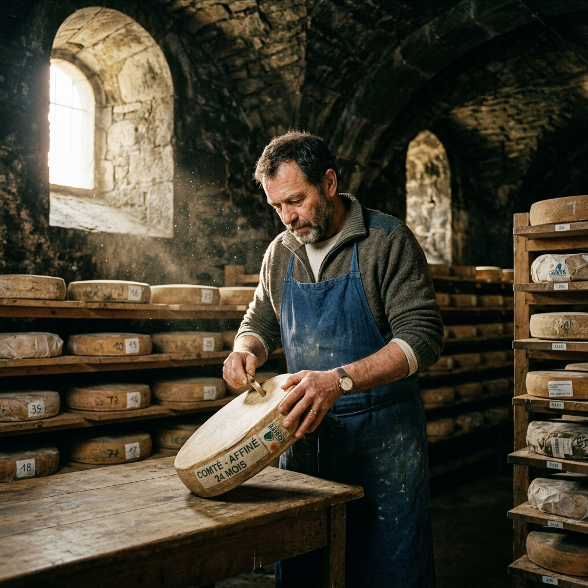
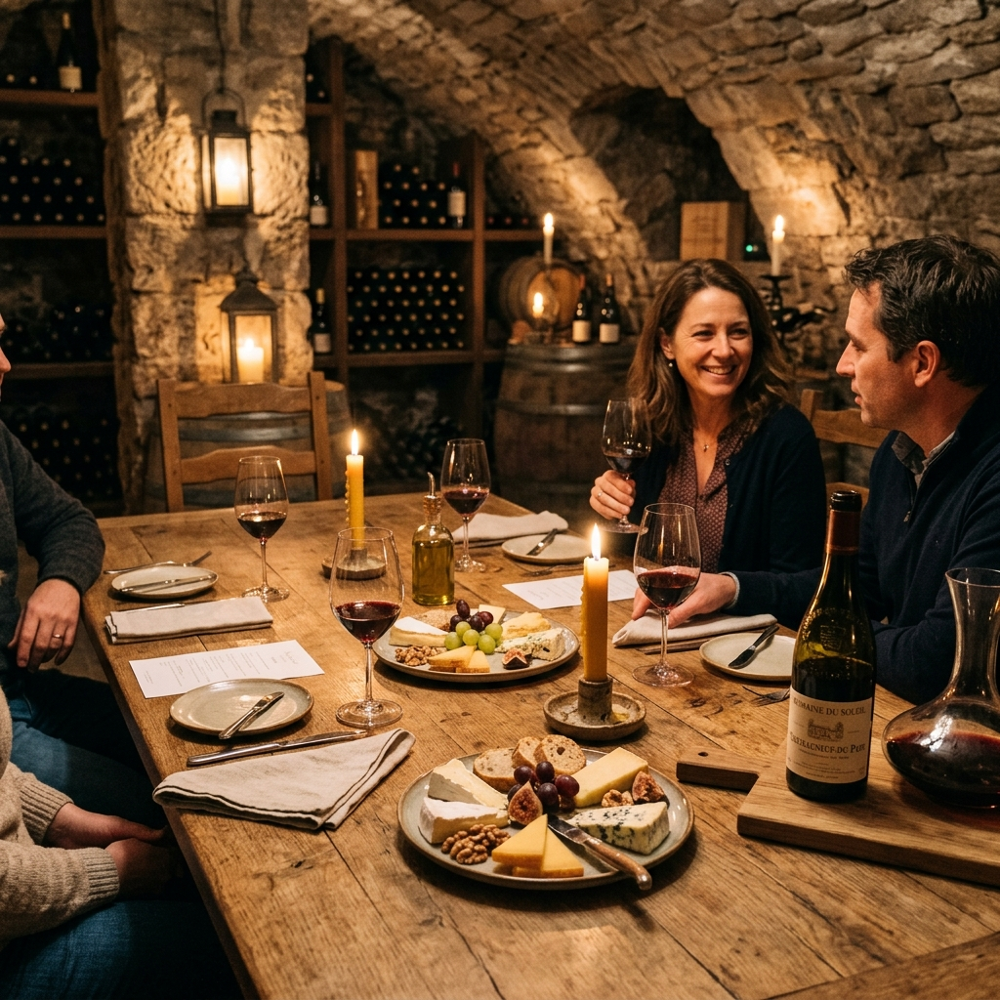
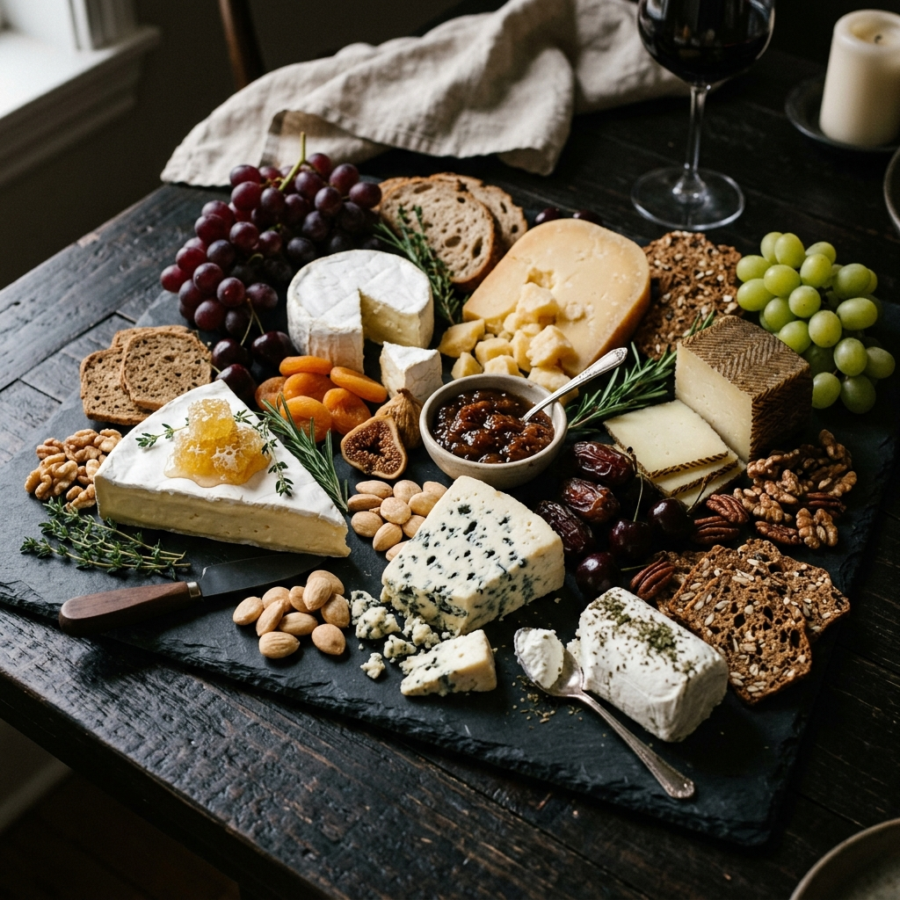
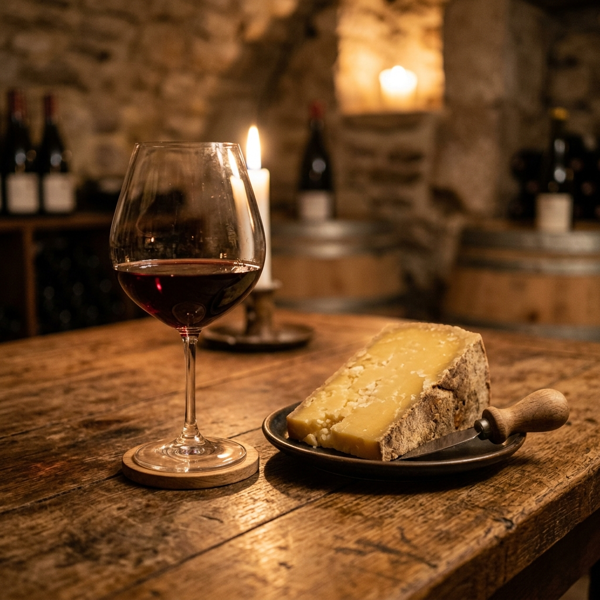
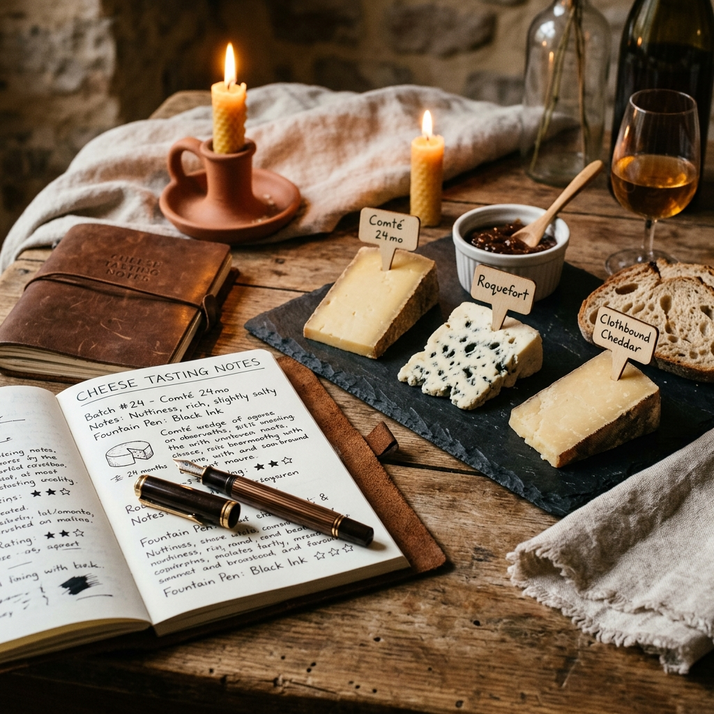

What Is an
Affineur?
An affineur is neither a cheesemaker nor a retailer — we occupy the space in between. We receive young, freshly pressed wheels from our farm partners, and through months of dedicated cellar work, we guide them to their peak of flavour.
The word comes from the French affiner — to refine, to perfect. It is an ancient craft that demands equal parts science and intuition. The affineur reads each wheel like a text — its weight, its aroma, the sound when tapped — and responds accordingly.
Receive & Assess
Young wheels arrive from partner farms and are evaluated for moisture, pH, and rind integrity.
Age & Tend
Weeks and months of turning, brushing, and monitoring in our stone cellar environment.
Taste & Release
Only wheels that meet our tasting benchmark are released — nothing before its time.

A Living,
Breathing Cave
Our cellar is carved from the same Burgundy limestone as the vineyards above it. Constant at 12°C and 95% humidity, it is the ideal environment for the slow miracle of aging.

Maturation
The Varieties
We Age
From delicate bloomy rinds to robust cave-aged alpines — our cellar holds wheels at every stage of a remarkable journey.

Bloomy Rind
Penicillium candidum develops a downy white coat. Aged 21–60 days. Creamy, mushroomy, and delicate.
Washed Rind
Regularly bathed in brine or wine. Aged 4–12 weeks. Orange rind, pungent aroma, surprisingly mild paste.
Hard Alpine
Our flagship category. Aged 6–24 months. Dense, crystalline, complex — butterscotch and roasted hazelnut.
Blue-Veined
Penicillium roqueforti pierces through the paste. Aged 3–6 months. Intense, tangy, deeply savoury.
From Farm to
Your Table
Each cheese in our cellar travels a carefully managed path from pasture to box — a journey that can last anywhere from 45 days to two full years.

Cellar selection with accompanying wine notes — a guide to our flavour pairings
How to Taste
a Cellar Selection
Approach our cheeses from mildest to most intense. Allow each wheel to rest at room temperature for 30 minutes before tasting — cold suppresses aroma and flavour.
Start Mild
Begin with bloomy or fresh styles before progressing to alpine and blue-veined wheels.
No Metal
Use wooden boards and ceramic knives — metal can impart an off-flavour to delicate rinds.
Pair Simply
Our cellar notes suggest ideal wine, bread, and fruit pairings for each cheese in your box.

Awards &
Press Features
Our cellar has been recognised by some of the most respected voices in European artisan food culture.
Concours International du Fromage
Slow Food Guide to Cheese
The World Cheese Book, 2022 Ed.
Paris Fromage Festival, 2024
Stay Close to the Cave
Subscribe to Cellar Notes — seasonal releases, affineur dispatches, and tasting event invitations. No spam, ever.